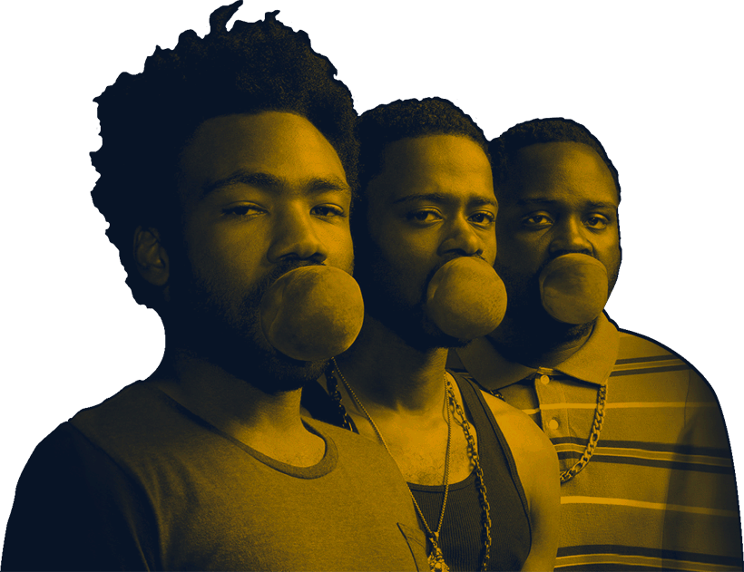

<div class="not-found">
  <div class="container-not-found">
    <div class="bg">
      <div class="info-lost">
        <h2 class="info-not-found">
          Creo que te perdiste bro!
        </h2>
        <button type="button" class="btn-back" [routerLink]="['/']">
          Regregar a casa
        </button>
      </div>
      
    </div>
  </div>
</div>